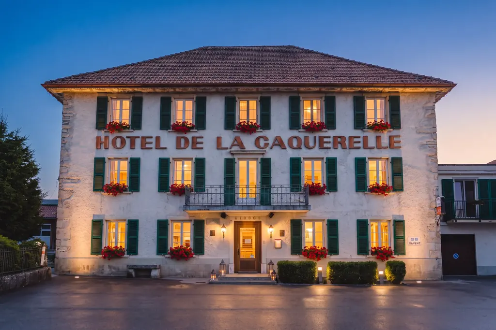
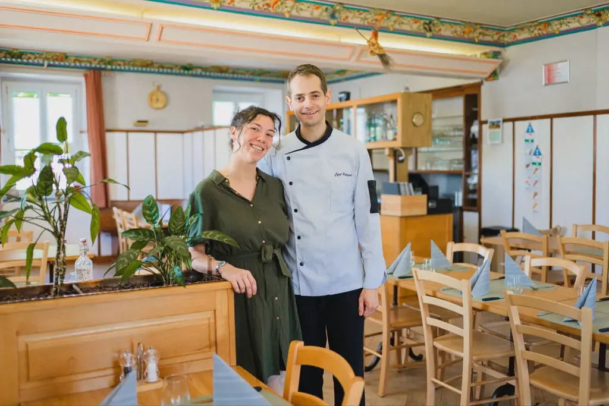
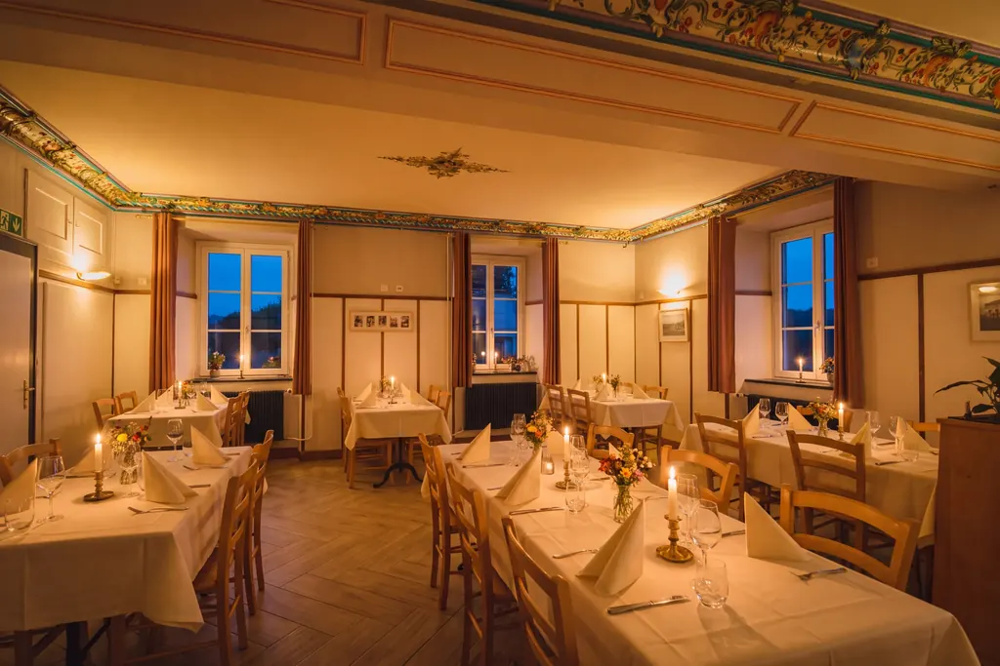
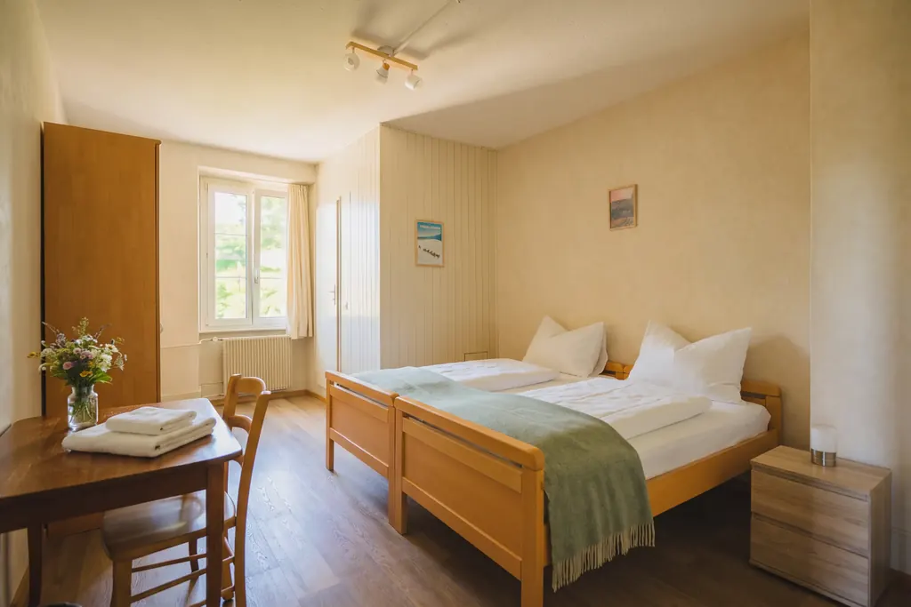
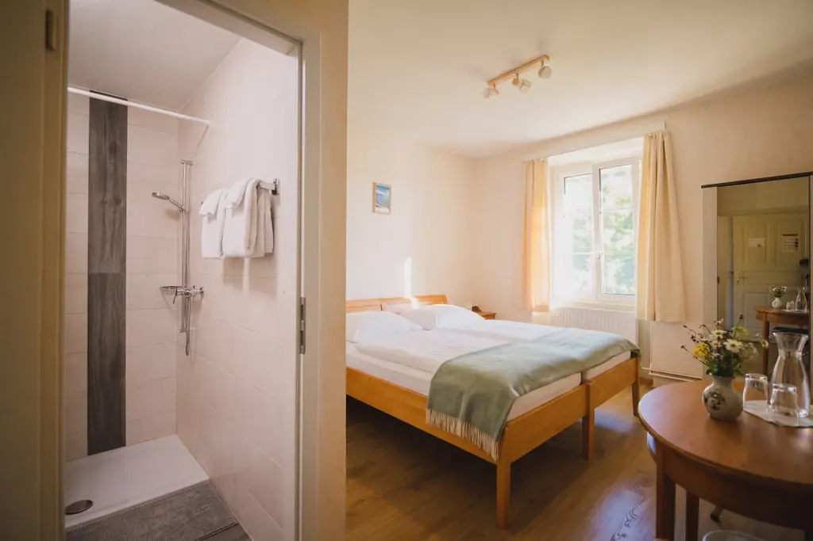
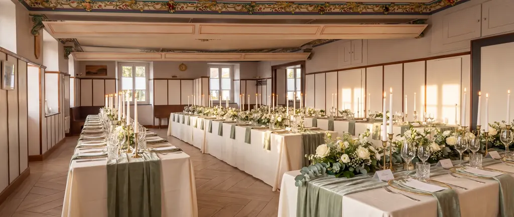
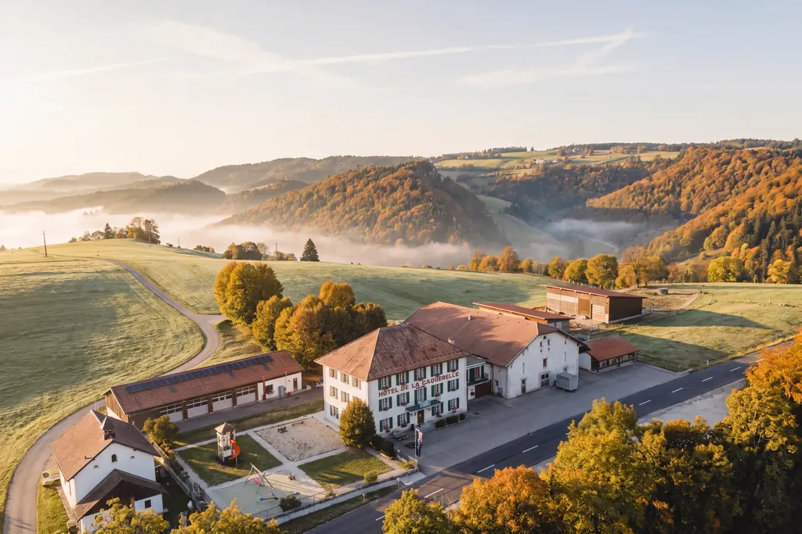

Hôtel-RestaurantLa Caquerelle
Une maison de famille au sommet du col, entre Clos du Doubs et Ajoie. Cinq générations y cultivent l’art de recevoir depuis 1906.

Cinq générations, une même table
En 1906, Eugène Garessus et Amélie Koller relèvent les murs de l’auberge incendiée et ouvrent l’Auberge du Chevreuil, au sommet du col. Cent vingt ans plus tard, Cyril Petignat et Félicie Boillat en tiennent les clés.
Ici, le luxe tient en quelques choses rares : le silence du col, une cuisine de cœur faite avec les artisans de la région, des chambres qui ouvrent sur les pâturages boisés, et l’attention d’une famille qui reçoit comme chez elle.
Notre histoire depuis 1906
La cuisine de cœur d’une auberge du col
Une cuisine authentique et généreuse, colorée de souvenirs d’enfance, transmise de génération en génération. En automne, la maison passe à l’heure du gibier.
En ce moment, la chasse
Chevreuil, sanglier et cerf, spätzlis maison, poire au vin rouge et pomme aux airelles. Le menu de chasse se déguste en trois plats pour CHF 52.–.


Neuf chambres, le silence pour voisin
Lumineuses et confortables, nos chambres doubles, à trois lits et familiales ouvrent sur le calme du col. Le matin, la brume quitte les combes et les chevreuils longent la lisière.
- Douche et WC privatifs
- Wifi gratuit
- Télévision à écran plat
- Parking gratuit
- De 1 à 4 personnes
- Restaurant sur place

Entre la Roche au Vilain et le Roc de l’Autel
On raconte qu’autrefois les sorcières tenaient ici leurs sabbats, leurs « hautes chasses », dans un fracas de hurlements. Le nom de Caquerelle en garderait la trace. Ne craignez rien : de nos jours, les sorcières ont bien changé.
Vos grandes occasions, sous les plafonds peints
Mariages, anniversaires, repas d’entreprise ou séminaires : une salle de 80 couverts, une salle de 25 places et deux salles de conférence équipées d’un wifi, d’un projecteur et d’un écran.


Au sommet du col, à dix minutes de Saint-Ursanne
- Saint-Ursanne · 10 min
- Porrentruy · 15 min
- Delémont · 15 min
- Saignelégier · 20 min
Parking gratuit devant la maison. Les sentiers partent de la porte.
Questions fréquentes
Où se trouve l’Hôtel-Restaurant La Caquerelle ?
À La Caquerelle 8, 2954 Asuel (commune de La Baroche), dans le canton du Jura en Suisse. La maison se dresse au col de La Caquerelle, à 836 mètres d’altitude, près du col des Rangiers : environ 10 minutes de Saint-Ursanne, 15 minutes de Porrentruy et de Delémont, 20 minutes de Saignelégier.
Quels sont les horaires du restaurant ?
Jusqu’au 26 novembre 2026 : lundi, mardi et dimanche de 9 h à 22 h 30, vendredi et samedi de 9 h à 23 h. Du 27 novembre 2026 au 31 mars 2027 : lundi et mardi de 9 h à 14 h 30 et de 18 h à 22 h 30, vendredi et samedi de 9 h à 23 h, dimanche de 9 h à 15 h et de 18 h à 22 h 30. Le restaurant est fermé le mercredi et le jeudi.
Comment réserver une chambre ou une table ?
Les chambres se réservent en ligne sur le moteur officiel Jura & Trois-Lacs, avec prix et disponibilités en temps réel. Les tables se réservent en ligne via notre système de réservation ou par téléphone au 032 426 66 56.
Combien de chambres compte l’hôtel ?
L’hôtel compte 9 chambres lumineuses : doubles, à trois lits et familiales jusqu’à quatre personnes. Toutes disposent d’une douche et d’un WC, d’une télévision à écran plat et du wifi gratuit. Le parking est gratuit.
Peut-on organiser un mariage, une fête ou un séminaire ?
Oui. La maison dispose d’une salle de restaurant de 80 places, d’une salle de 25 places et de deux salles de conférence équipées (wifi, projecteur, écran). Des menus de groupe sont proposés dès 10 personnes, à réserver au moins 7 jours à l’avance.
Que faire autour de La Caquerelle ?
Sur place : swingolf, tir à l’arc 3D, footgolf, pétanque, deux places de jeux et le Musée CRAC. À proximité : Saint-Ursanne et le Doubs, Porrentruy, la route de la Damassine, les Franches-Montagnes, les empreintes de dinosaures et les grottes de Réclère.